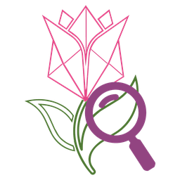

Fioremi Inspector
Cuidado de plantas con IA
Modo demostración: los diagnósticos son de ejemplo. Añade una clave de IA en el panel de administración (Gemini es gratis).
Inicio
Plantas
Analizar
Avisos
Historial